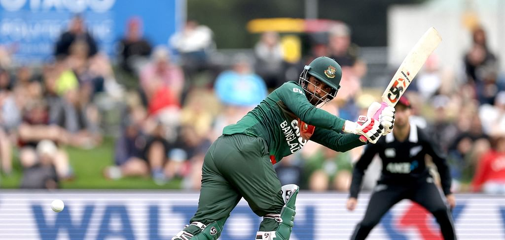
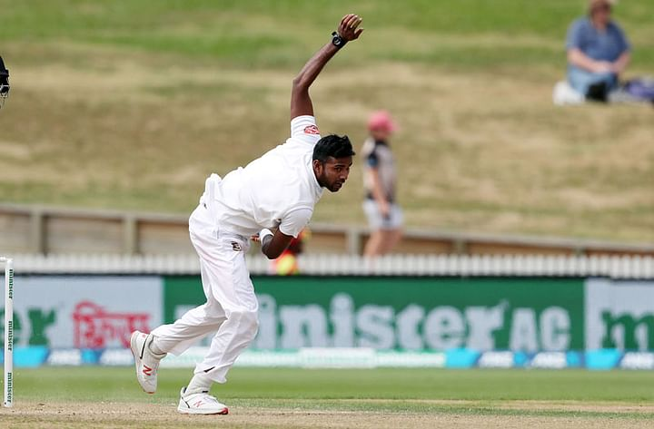

তামিমকে আউট করতে না পেরে এখন জরিমানাও গুনছেন জেমিসন
প্রকাশ: ২৫ শে মার্চ

এবারের আইপিএলের নিলামের সবচেয়ে বড় চমক কাইল জেমিসন। চারটি আন্তর্জাতিক টি-টোয়েন্টি ম্যাচ খেলে মাত্র ৩ উইকেট পাওয়া এই কিউই পেসারকে ১৫ কোটি রুপিতে কিনেছে রয়্যাল চ্যালেঞ্জার্স বেঙ্গালুরু। বিরাট কোহলির দল তাঁকে কিনে ভুল করেছে কি না, সেটা আগামী দুই মাসেই টের পাওয়া যাবে। তবে এখন পর্যন্ত যা ইঙ্গিত, তাতে হতাশা উপহার পাওয়ার সম্ভাবনাই বেশি। নিলামের পরই অস্ট্রেলিয়ার বিপক্ষে টি-টোয়েন্টি সিরিজ খেলেছেন জেমিসন। তাতে নিজেকে প্রমাণ করতে তো পারেনইনি, বরং নিউজিল্যান্ড দলে নিজের অন্তর্ভুক্তিই প্রশ্নের মুখে ফেলে দিয়েছিলেন। চার ম্যাচে পুরো ১৬ ওভার বল করতে পারেননি, অথচ রান দিয়েছে ১৭৫টি। এত রানবন্যার বিনিময়ে উইকেট পেলেও হয়তো প্রশ্ন উঠত না, কিন্তু চার ম্যাচে মাত্র একজন অস্ট্রেলিয়ান ব্যাটসম্যানকে আউট করতে পেরেছেন জেমিসন। বাংলাদেশের বিপক্ষে সিরিজেও ভাগ্য বদলাতে পারেননি পৌনে সাত ফুট উচ্চতার ফাস্ট বোলার। প্রথম ওয়ানডেতে বাংলাদেশের ব্যাটসম্যানদের ভয়ংকর ব্যর্থতার ফায়দা প্রায় সব কিউই বোলার তুলে নিলেও জেমিসন ছিলেন উইকেটশূন্য। দ্বিতীয় ম্যাচে অবশ্য এক উইকেট পেয়েছেন। এর সঙ্গে জরিমানাও জুটিয়ে নিয়েছেন! গত মঙ্গলবার বাংলাদেশের বিপক্ষে দ্বিতীয় ওয়ানডেতে দুর্দান্ত এক ক্যাচ নিয়েছেন কাইল জেমিসন। ৬ ফুট ৮ ইঞ্চি শরীর নিয়েও নিজের বলে ক্যাচ ধরতে ঝাঁপিয়ে পড়েছেন, প্রায় শুয়ে পড়ে ধরেছিলেন তামিম ইকবালের ব্যাট ছুঁয়ে আসা বল। দারুণ সে ক্যাচে আম্পায়ার ক্রিস ব্রাউন প্রথমে আউট দিয়েও দিয়েছিলেন। নিশ্চিত হতে তৃতীয় আম্পায়ারের কাছে গেলেও মাঠ থেকে সফট সিগন্যাল আউটই দেওয়া হয়েছিল।৩৪ রানে থাকা তামিম ইকবালকে তবু ফেরাতে পারেননি জেমিসন। তৃতীয় আম্পায়ার দেখেছেন, ক্যাচ ধরলেও শেষ পর্যন্ত বল নিয়ন্ত্রণে রাখতে পারেননি জেমিসন। ক্রিকেটের আইন অনুযায়ী একটি ক্যাচের শুরু থেকে শেষ পর্যন্ত বল নিজের নিয়ন্ত্রণে রাখতে হয় ফিল্ডারদের। তাই তৃতীয় আম্পায়ার ওয়েইন নাইটস আউট দেননি তামিমকে। এত দারুণ চেষ্টার ফল না পাওয়ায় খেপে উঠেছিলেন জেমিসন। তৃতীয় আম্পায়ারের সিদ্ধান্ত বদলানোর সুযোগ নেই জেনে রাগ আটকাতে পারেননি। প্রকাশ্যেই সিদ্ধান্ত নিয়ে ক্ষোভ প্রকাশ করেছেন। দুই হাত ওপরে ছুড়ে এভাবে আম্পায়ারের সিদ্ধান্ত নিয়ে অসন্তুষ্টি প্রকাশ করা তাঁকে বিপদে ফেলে দিয়েছে। আইসিসির আচরণবিধির ২.৮ ধারা ভাঙার অভিযোগ তোলা হয়েছে জেমিসনের বিরুদ্ধে। এই ধারায় আন্তর্জাতিক ম্যাচে আম্পায়ারের সিদ্ধান্তের বিরুদ্ধে ক্ষোভ প্রকাশ করা নিয়ে আলোচনা করা হয়েছে। নিজের বিরুদ্ধে ওঠা অভিযোগ স্বীকার করে নিয়েছেন জেমিসন। প্রথম মাত্রার অপরাধ হিসেবে একটি ডিমেরিট পয়েন্ট বসেছে এই পেসারের নামের পাশে। এ ছাড়া ম্যাচ ফির ৫০ ভাগ পর্যন্ত কাটার বিধান রয়েছে এই আইনে। তবে ম্যাচ রেফারি জেফ ক্রো অতটা কড়া শাস্তি দেননি। ম্যাচ ফির ১৫ ভাগ জরিমানা দিয়েই আপাতত পার পাচ্ছেন কিউই পেসার। কোনো আপত্তি ছাড়া শাস্তি মেনে নিয়েছেন জেমিসন, তাই আনুষ্ঠানিক কোনো শুনানিও হয়নি। এর আগে পাকিস্তানের বিপক্ষেও ফিল্ডিংয়ের এক ঘটনায় এক ডিমেরিট পয়েন্ট জুটেছিল জেমিসনের। সে সঙ্গে ম্যাচ ফির ২৫ ভাগ জরিমানা দিয়েছিলেন। মাউন্ট মঙ্গানুইয়ে পাকিস্তানের বিপক্ষে গত ডিসেম্বরে ফাহিম আশরাফের দিকে বল ছুড়ে মেরেছিলেন জেমিসন। অথচ তখন আশরাফ স্টাম্প থেকে দূরে ছিলেন এবং রান নেওয়ার চেষ্টাও করছিলেন না। মাত্র তিন মাসে দুই ডিমেরিট পয়েন্ট জোগাড় হয়ে গেছে জেমিসনের। দুই বছরের মধ্যে চার ডিমেরিট পয়েন্ট পেলে সেটা সাসপেনশন পয়েন্টে রূপান্তরিত হয় এবং এক টেস্ট অথবা দুটি সীমিত ওভারে ম্যাচের নিষেধাজ্ঞা জোটে।
তিন দিন খেলে জানলেন করোনা পজিটিভ
প্রকাশ:২৫ শে মার্চ

জাতীয় ক্রিকেট লিগের প্রথম রাউন্ডের শেষ দিনে এসে করোনায় আক্রান্ত হলেন টেস্ট পেসার ইবাদত হোসেন। কোভিড পজিটিভ হওয়ায় খুলনার বিপক্ষে ম্যাচের শেষ দিন মাঠে নামতে পারেননি সিলেটের এই পেসার। কোভিড বদলি হিসেবে তাঁর জায়গায় খেলেছেন আরেক পেসার রেজাউর রহমান। বুধবার করোনাভাইরাসের মৃদু লক্ষণ দেখা দিলে সতর্কতাস্বরূপ পরীক্ষা করানো হয়। আজ সেই পরীক্ষায় পজিটিভ আসায় আইসোলেশনে পাঠানো হয়। বিষয়টি নিশ্চিত করেছেন প্রথম ধাপে সিলেট ও খুলনার ম্যাচের ম্যাচ রেফারি রকিবুল হাসান, ‘আজ ওর পজিটিভ ফল আসার পর বদলি হিসেবে রেজাউরকে নামানো হয়। আইসিসির নতুন নিয়ম অনুযায়ী লাইক-ফর-লাইক বদলি দেওয়া যায়।’ইবাদতের না থাকায় অবশ্য ম্যাচের ফলে খুব একটা পরিবর্তন আসেনি। ব্যাটসম্যানদের ব্যর্থতায় ৮ উইকেটে সিলেটকে হারায় বর্তমান চ্যাম্পিয়ন খুলনা। মাত্র ৭৩ রান তাড়া করতে নেমে যে ২ উইকেট হারিয়েছে খুলনা, তার একটি নিয়েছেন ইবাদতের বদলি খেলোয়াড় রেজাউর। দ্বিতীয় ইনিংসে এক ওভারই বোলিং করেছেন রেজাউর। সিলেটের দ্বিতীয় ইনিংসে ২৯ বল খেলে ১৪ রান করেছেন ২২ বছর বয়সী এ পেসার। ছিটকে যাওয়ার আগে প্রথম ইনিংসে ব্যাট হাতে ২ রানের পাশাপাশি বল হাতে ৩ উইকেট নিয়েছিলেন ইবাদত। এর আগে করোনাভাইরাস ধরা পড়ে ঢাকা মেট্রোর বাঁহাতি ওপেনার সাদমান ইসলামের। প্রথম রাউন্ডের ম্যাচ খেলতে পারেননি তিনি। এখন আছেন আইসোলেশনে। দ্রুত সুস্থ হলে খেলবেন দ্বিতীয় রাউন্ডের ম্যাচে। ইবাদত ও সাদমান—দুজনই আবার বাংলাদেশ টেস্ট দলের নিয়মিত সদস্য। আগামী ১২ এপ্রিল বাংলাদেশের শ্রীলঙ্কা সফরে যাওয়ার কথা। প্রস্তুতির জন্য জাতীয় লিগে খেলা দরকার ছিল দুজনের। কিন্তু করোনা এসে প্রস্তুতিতে দিল বাধা।
| ©Prothom alo |